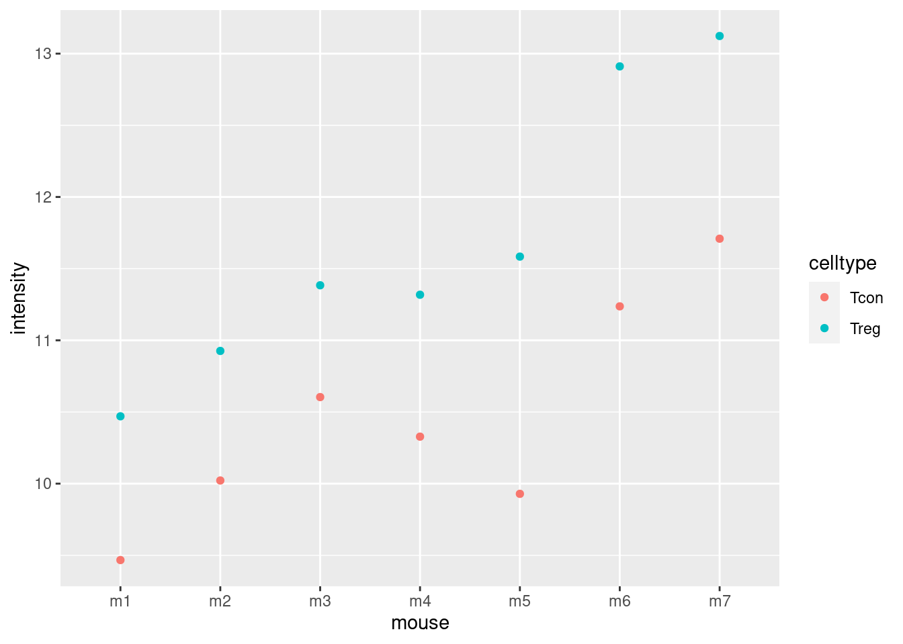
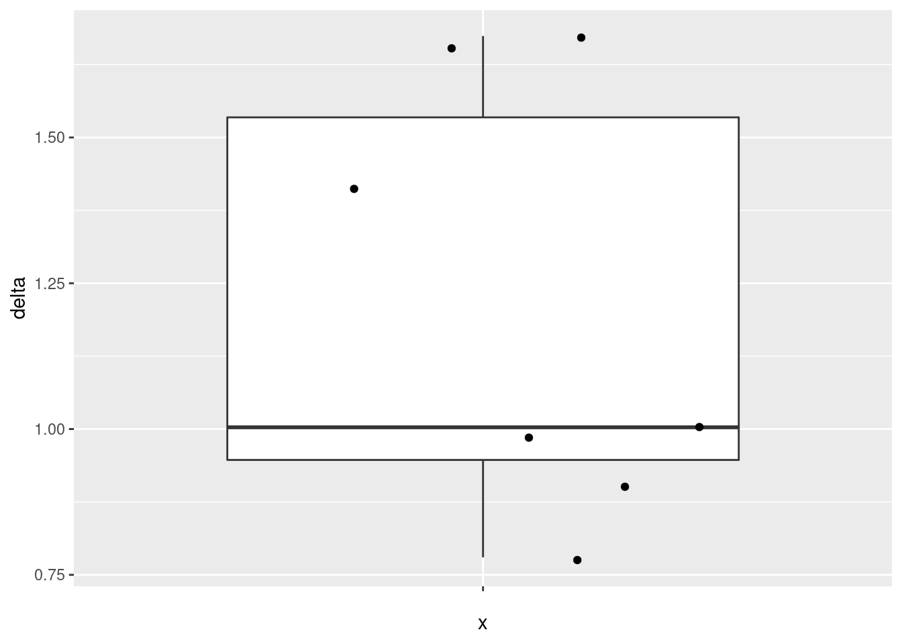
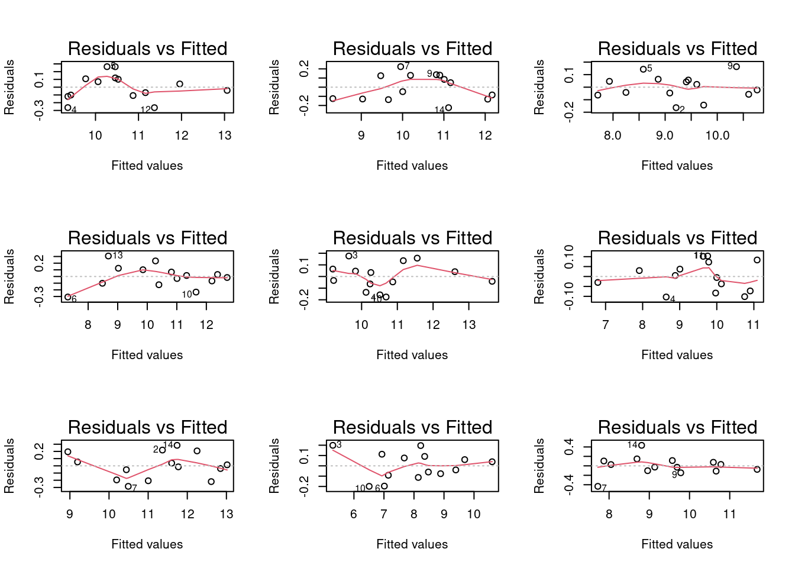

Experimenteel Design II: Randomized Complete Block Designs en Pseudo-replicatie
Lieven Clement
statOmics, Ghent University (https://statomics.github.io)

library(tidyverse)## ── Attaching packages ─────────────────────────────────────── tidyverse 1.3.1 ──## ✔ ggplot2 3.3.5 ✔ purrr 0.3.4
## ✔ tibble 3.1.4 ✔ dplyr 1.0.7
## ✔ tidyr 1.1.3 ✔ stringr 1.4.0
## ✔ readr 1.4.0 ✔ forcats 0.5.1## ── Conflicts ────────────────────────────────────────── tidyverse_conflicts() ──
## ✖ dplyr::filter() masks stats::filter()
## ✖ dplyr::lag() masks stats::lag()1 Randomized complete block designs
\[\sigma^2= \sigma^2_{bio}+\sigma^2_\text{lab} +\sigma^2_\text{extraction} + \sigma^2_\text{run} + \ldots\]
- Biologisch: fluctuaties in proteïne niveau tussen muizen, fluctaties in proteïne concentratie tussen cellen, …
- Technisch: kooi-effect, lab effect, week effect, plasma extractie, MS-run, …
2 Nature methods: Points of significance - Blocking
https://www.nature.com/articles/nmeth.3005.pdf
Oneway anova is een speciaal geval van een “completely randomized design” (CRD):
- experimentele eenheden zijn at random getrokken uit de populatie.
- behandelingen worden at random toegewezen aan de experimentele eenheden
- Elke experimentele eenheid krijgt 1 behandeling en wordt 1 keer gemeten.
In een blokdesign zijn de blokken blokken die at random worden gesampled uit de populatie van alle mogelijke blokken.
- De “randomized complete block design” (RCB) beperkt de randomisatie: de behandelingen worden binnen de blokken gerandomiseerd.
- het kan niet als een one-way anova worden geanalyseerd.
- Een gepaard design is het meest eenvoudige RCB: met blokgrootte 2.
- Binnen block effecten kunnen worden geschat met de lm functie in R.
3 Muis voorbeeld
3.1 Intro

Duguet et al. (2017) MCP 16(8):1416-1432. doi: 10.1074/mcp.m116.062745
- Alle behandelingen (hier celtypes) van interesse zijn binnen
blok!
- We kunnen het effect schatten van de behandeling binnen blok!
We focussen op één proteïne
- De gemeten intensiteiten zijn reeds log2 getransformeerd. Verschillen in de intensiteiten kunnen dus als log2 FC (fold changes) worden geïnterpreteerd.
- P16045 or Galectin-1.
- Functie: “Lectin that binds beta-galactoside and a wide array of complex carbohydmousees. Plays a role in regulating apoptosis, cell proliferation and cell differentiation. Inhibits CD45 protein phosphatase activity and therefore the dephosphorylation of Lyn kinase. Strong inducer of T-cell apoptosis.” (source: uniprot)
3.2 Data Exploratie
mouse <- read_tsv("https://raw.githubusercontent.com/statOmics/PSLS21/data/mouseP16045.txt")##
## ── Column specification ────────────────────────────────────────────────────────
## cols(
## celltype = col_character(),
## mouse = col_character(),
## intensity = col_double()
## )mousemouse %>%
ggplot(aes(x = mouse, y= intensity, col=celltype)) +
geom_point()
mouse %>%
ggplot(aes(x = celltype, y= intensity)) +
geom_boxplot(aes(col=celltype),outlier.shape = NA) +
geom_line(aes(group = mouse)) +
geom_point(aes(col=celltype))De plots tonen evidentie voor
- opregulatie van proteïne expressie in regulatorische T-cells en
- veel variabiliteit in de expressie tussen de proefdieren!
3.3 Gepaarde analyse
Het is een gepaard design, het meest eenvoudige RCB.
In de H5 van de basiscursus statistiek zouden we de data analyseren door gebruikt te maken van het verschil in expressie tussen de celtypes.
mouseWide <- mouse %>%
spread(celltype,intensity) %>%
mutate(delta = Treg - Tcon)
mouseWide3.3.1 Data exploratie
- Boxplot van de verschillen
mouseWide %>%
ggplot(aes(x="",y=delta)) +
geom_boxplot(outlier.shape = NA) +
geom_jitter()
- Summary statistics
deltaSum <- mouseWide %>%
summarize_at("delta",
list(
mean = ~ mean(.,na.rm = TRUE),
sd = ~ sd(.,na.rm = TRUE),
n = ~ is.na(.) %>% `!` %>% sum
)
) %>%
mutate(se = sd/sqrt(n))
deltaSumMerk op, dat de intensiteitsdata niet onafhankelijk zijn omdat we de expressie hebben gemeten in twee celtypes van hetzelfde proefdier.
- Covariantie en correlatie van de expressie in beide celtypes
cor(mouseWide[,c("Tcon","Treg")])## Tcon Treg
## Tcon 1.00000 0.93874
## Treg 0.93874 1.00000var(mouseWide[,c("Tcon","Treg")])## Tcon Treg
## Tcon 0.6101531 0.7245316
## Treg 0.7245316 0.9763042var(mouseWide[,c("Tcon","Treg")]) %>%
diag %>%
sqrt## Tcon Treg
## 0.7811230 0.9880811Er is inderdaad een grote correlatie in de expressie voor het proteïne in conventionele and regulatorische T-cellen.
Standarddeviatie van verschil?
\[ \begin{array}{lcl} \text{sd}_{ax_r + bx_c} &=& \sqrt{a^2\hat \sigma_r^2 + b^2 \hat \sigma_c^2 + 2ab \hat\sigma_{r,c}} \\ \text{sd}_{x_r - x_c} &=&\sqrt{1^2\hat \sigma_r^2 + (-1)^2 \hat \sigma_c^2 + 2 \times 1 \times -1 \times \hat\sigma_{r,c}}\\ &=&\sqrt{\hat \sigma_r^2 + \hat \sigma_c^2 - 2 \times \hat\sigma_{r,c}} \end{array} \]
sdDelta2 <- (c(-1,1) %*% var(mouseWide[,c("Tcon","Treg")]) %*% c(-1,1)) %>%
sqrt
sdDelta2## [,1]
## [1,] 0.3706672seDeltaBar <- sdDelta2 / sqrt(deltaSum$n)
seDeltaBar## [,1]
## [1,] 0.140099deltaSum- De standarddeviatie van het verschil is veel kleiner door de sterke correlatie in expressie in beide celtypes.
- Merk op, dat het gepaarde design ons toelaat om de log2 FC te berekenen tussen beide celtypes voor elk proefdier.
3.4 RCB analyse
We kunnen de data ook analyseren met een lineair model met
- een hoofdeffect voor celtype en
- een hoofdeffect voor de blokfactor muis
Omdat we de expressie in elk celtype hebben gemeten kunnen we dus het gemiddelde effect schatten voor elke muis.
lmRCB <- lm(intensity ~ celltype + mouse, mouse)
plot(lmRCB, which = c(1,2,3))Als je twijfelt of voldaan is aan de aannames van het model is het nuttig om gebruikt te maken van simulaties waarbij we data simuleren uit een model waar alle aannames zijn voldaan.
design <- model.matrix(intensity ~ celltype + mouse, mouse)
sigmaMouse <- sqrt(car::Anova(lmRCB, type = "III")["mouse","Sum Sq"]/car::Anova(lmRCB, type = "III")["mouse","Df"])
betas <- lmRCB$coefficients
nMouse <- mouse$mouse %>% unique %>% length
par(mfrow=c(3,3))
for (i in 1:9)
{
mouseEffect <- rnorm(nMouse, sd = sigmaMouse)
betasMouse <- mouseEffect[-1]-mouseEffect[1]
betas[-c(1:2)] <- betasMouse
ysim <- design %*% betas + rnorm(nrow(design),sd=sigma(lmRCB))
plot(lm(ysim ~ -1 + design), which = 1)
}
De deviaties die we in de residuplot zien voor ons experiment zijn vergelijkbaar met afwijkingen die we kunnen observeren uit gesimuleerde data uit een gelijkaardige proef waarbij aan alle aannames van het model is voldaan.
3.4.1 Inferentie
anovaRCB <- car::Anova(lmRCB, type = "III")
summary(lmRCB)##
## Call:
## lm(formula = intensity ~ celltype + mouse, data = mouse)
##
## Residuals:
## Min 1Q Median 3Q Max
## -0.2356 -0.1387 0.0000 0.1387 0.2356
##
## Coefficients:
## Estimate Std. Error t value Pr(>|t|)
## (Intercept) 9.3671 0.1981 47.277 6.00e-09 ***
## celltypeTreg 1.2029 0.1401 8.586 0.000137 ***
## mousem2 0.5055 0.2621 1.929 0.102036
## mousem3 1.0255 0.2621 3.913 0.007869 **
## mousem4 0.8545 0.2621 3.260 0.017245 *
## mousem5 0.7880 0.2621 3.006 0.023809 *
## mousem6 2.1055 0.2621 8.033 0.000199 ***
## mousem7 2.4475 0.2621 9.338 8.55e-05 ***
## ---
## Signif. codes: 0 '***' 0.001 '**' 0.01 '*' 0.05 '.' 0.1 ' ' 1
##
## Residual standard error: 0.2621 on 6 degrees of freedom
## Multiple R-squared: 0.9717, Adjusted R-squared: 0.9388
## F-statistic: 29.47 on 7 and 6 DF, p-value: 0.000309t.test(mouseWide$delta)##
## One Sample t-test
##
## data: mouseWide$delta
## t = 8.5858, df = 6, p-value = 0.0001372
## alternative hypothesis: true mean is not equal to 0
## 95 percent confidence interval:
## 0.8600472 1.5456671
## sample estimates:
## mean of x
## 1.202857anovaRCBMerk op dat
de puntschatter, se, t-test statistiek en p-waarde voor het celtype effect exact overeenkomt met de analyse a.d.h.v. een gepaarde t-test!
de anova analyse toont dat we met het model de totale variabiliteit in de expressie opsplitsen in variabiliteit door celtype (CT), variabiliteit tussen muizen (M) en residuele variabiliteit (R) binnen muis die we niet kunnen verklaren met het model:
\[ \begin{array}{lcl} \text{SSTot} &=& \text{SSCT} + \text{SSM} + \text{SSE}\\ 14.6 &=& 5.1 + 9.1 + 0.4 \end{array} \]
Het celtype en muis effect verklaren respectievelijk \[ \begin{array}{ll} \frac{\text{SSCT}}{\text{SSTot}}\times 100&\frac{\text{SSM}}{\text{SSTot}}\times 100\\\\ 34.7& 62.4\\ \end{array} \]
percent van de variabiliteit in log2 proteïne-intensiteiten en
\[ \frac{\text{SSE}}{\text{SSTot}} \times 100 = 2.8 \] percent kan niet worden verklaard: residuele variabiliteit.
Merk op, dat
- de variabiliteit tussen muizen de grootste bron van variabiliteit is in de data,
- Deze variabiliteit kunnen we schatten met het RCB design en
- we kunnen deze variabiliteit dus isoleren van de residuele variabiliteit
- Dat leidt tot een veel hogere precisie van de schatter voor de gemiddelde log2 FC tussen regulatorische eb conventionele T-cellen dan wat zou worden verkregen bij een CRD design!
Merk ook op dat het RCB ook een aantal vrijheidsgraden dient op te offeren om het muiseffect te kunnen schatten, hier 6 DF.
De winst in power van een RCB is dus een afweging tussen de variabiliteit die kan worden verklaart met het blokeffect en het verlies in vrijheidsgraden.
Als je je de formule voor de variantie covariantie matrix van de parameter schatters bijhaalt zien we \[ \hat{\boldsymbol{\Sigma}}^2_{\hat{\boldsymbol{\beta}}} =\left(\mathbf{X}^T\mathbf{X}\right)^{-1}\hat\sigma^2 \]
dat het RCB een impact heeft op
- \(\left(\mathbf{X}^T\mathbf{X}\right)^{-1}\) alsook op
- \(\hat\sigma^2\) van de residuen!
\(\rightarrow\) We kunnen de variantie in de expressie tussen de proefdieren/blokken isoleren uit onze analyse!
\(\rightarrow\) Dat reduceert de variantie van de residuen en leidt tot een toename in power als de variabiliteit tussen muizen/blokken groot is.
Merk op dat,
\[ \hat\sigma^2 = \frac{\text{SSE}}{n-p} = \frac{SSTot - SSM - SSCT}{n-p} \]
- Blokken is dus nuttig als de reductie in SSE groot is in vergelijking met het verlies in vrijheidsgraden.
- Dus als SSM een groot deel in van de totale variabiliteit kan verklaren.
Verder heeft het verlies in vrijheidsgraden ook een impact op de t-verdeling die zal worden gebruikt voor inferentie, die hierdoor bredere staarten zal hebben.
4 Vergelijking van de power tussen een CRD en RCB
4.1 Voorbeelden van de twee designs
Hier gaan we de data gebruiken om twee experimenten te simuleren:
een randomized complete block design (RCB) met 3 muizen
een completely randomized design (CRD) met 6 muizen maar waarbij we enkel één celtype per muis meten.
set.seed(859)
mRcb <- mouse %>%
pull(mouse) %>%
unique %>%
sample(size=3)
rcbSmall <- mouse %>% filter(mouse%in%mRcb)
rcbSmallmCrd <- mouse %>%
pull(mouse) %>%
unique %>%
sample(size=6)
crdSmall <-
bind_rows(
mouse %>%
filter(mouse%in%mCrd[1:3]) %>%
filter(celltype=="Tcon"),
mouse %>%
filter(mouse%in%mCrd[-(1:3)]) %>%
filter(celltype=="Treg"))
crdSmallIn beide experimenten dienen we dus 6 massa-spectrometrie runs te doen.
lmCRDSmall <- lm(intensity ~ celltype, crdSmall)
summary(lmCRDSmall)##
## Call:
## lm(formula = intensity ~ celltype, data = crdSmall)
##
## Residuals:
## 1 2 3 4 5 6
## -0.507 -0.201 0.708 -1.189 -0.275 1.464
##
## Coefficients:
## Estimate Std. Error t value Pr(>|t|)
## (Intercept) 10.5290 0.6077 17.326 6.51e-05 ***
## celltypeTreg 1.1300 0.8594 1.315 0.259
## ---
## Signif. codes: 0 '***' 0.001 '**' 0.01 '*' 0.05 '.' 0.1 ' ' 1
##
## Residual standard error: 1.053 on 4 degrees of freedom
## Multiple R-squared: 0.3018, Adjusted R-squared: 0.1272
## F-statistic: 1.729 on 1 and 4 DF, p-value: 0.2589anova(lmCRDSmall)lmRCBSmall <- lm(intensity ~ celltype + mouse, rcbSmall)
anova(lmRCBSmall)summary(lmRCBSmall)##
## Call:
## lm(formula = intensity ~ celltype + mouse, data = rcbSmall)
##
## Residuals:
## 1 2 3 4 5 6
## 0.06433 0.12633 -0.19067 -0.06433 -0.12633 0.19067
##
## Coefficients:
## Estimate Std. Error t value Pr(>|t|)
## (Intercept) 9.9577 0.1940 51.329 0.000379 ***
## celltypeTreg 1.0327 0.1940 5.323 0.033527 *
## mousem3 0.5200 0.2376 2.189 0.160094
## mousem7 1.9420 0.2376 8.173 0.014641 *
## ---
## Signif. codes: 0 '***' 0.001 '**' 0.01 '*' 0.05 '.' 0.1 ' ' 1
##
## Residual standard error: 0.2376 on 2 degrees of freedom
## Multiple R-squared: 0.9804, Adjusted R-squared: 0.951
## F-statistic: 33.32 on 3 and 2 DF, p-value: 0.02928Merk op dat
- we de opregulatie van het proteïne in regulatorische T-cellen op kunnen pikken met het RCB maar niet met het CRD.
- de standarderror van de \(\log_2\text{FC}_\text{Treg-Tcon}\) schatting is een factor 4.4 kleiner voor het RCB design!
Een slechte data analyst die in zijn analyse vergeet om rekening te houden met het blokeffect is terug naar af:
wrongRcb <- lm(intensity ~ celltype, rcbSmall)
anova(wrongRcb)summary(wrongRcb)##
## Call:
## lm(formula = intensity ~ celltype, data = rcbSmall)
##
## Residuals:
## 1 2 3 4 5 6
## -0.7563 -0.1743 0.9307 -0.8850 -0.4270 1.3120
##
## Coefficients:
## Estimate Std. Error t value Pr(>|t|)
## (Intercept) 10.7783 0.5885 18.316 5.23e-05 ***
## celltypeTreg 1.0327 0.8322 1.241 0.282
## ---
## Signif. codes: 0 '***' 0.001 '**' 0.01 '*' 0.05 '.' 0.1 ' ' 1
##
## Residual standard error: 1.019 on 4 degrees of freedom
## Multiple R-squared: 0.2779, Adjusted R-squared: 0.09743
## F-statistic: 1.54 on 1 and 4 DF, p-value: 0.2825In deze analyse wordt de variabiliteit tussen de blokken geabsorbeerd in de variantieschatter voor de residuele variabiliteit.
Uiteraard mogen we een RCB design nooit analyseren zonder de blokfactor op te nemen in het model omdat het design een randomisatierestrictie impliceert.
4.2 Winst in power door blokking?
4.2.1 Power voor completely randomized design (CRD)
varBetweenPlusWithin <- sum(car::Anova(lmRCB,type="III")[c("mouse","Residuals"),"Sum Sq"])/sum(car::Anova(lmRCB,type="III")[c("mouse","Residuals"),"Df"])
alpha <- 0.05
nSim <- 20000
b0 <- 0
sd <- sqrt(varBetweenPlusWithin)
ns <- c(3,7)
deltas <- lmRCB$coefficients["celltypeTreg"]
L <- limma::makeContrasts("celltypeTreg",levels=c("(Intercept)","celltypeTreg"))## Warning in limma::makeContrasts("celltypeTreg", levels = c("(Intercept)", :
## Renaming (Intercept) to InterceptpowerFast <- matrix(NA,nrow=length(ns)*length(deltas),ncol=3) %>% as.data.frame
names(powerFast) <- c("b1","n","power")
i <- 0
for (n in ns)
{
n1 <- n2 <- n
### Simulation
predictorData <- data.frame(celltype = rep(c("Tcon","Treg"),c(n1,n2)) %>% as.factor)
design <- model.matrix(~celltype,predictorData)
for (b1 in deltas)
{
ySim <- rnorm(nrow(predictorData)*nSim,sd=sd)
dim(ySim) <-c(nrow(predictorData),nSim)
ySim <- ySim + c(design %*%c(b0,b1))
ySim <- t(ySim)
### Fitting
fitAll <- limma::lmFit(ySim,design)
### Inference
varUnscaled <- c(t(L)%*%fitAll$cov.coefficients%*%L)
contrasts <- fitAll$coefficients %*%L
seContrasts <- varUnscaled^.5*fitAll$sigma
tstats <- contrasts/seContrasts
pvals <- pt(abs(tstats),fitAll$df.residual,lower.tail = FALSE)*2
i <- i+1
powerFast[i,] <- c(b1,n,mean(pvals < alpha))
}
}
powerFastOmdat we hier een eenvoudige vergelijking tussen twee groepen doen
kunnen we de power ook berekenen met de power.t.test
functie.
power.t.test(n = 3,delta = lmRCB$coefficients["celltypeTreg"], sd = sqrt(varBetweenPlusWithin))##
## Two-sample t test power calculation
##
## n = 3
## delta = 1.202857
## sd = 0.8906339
## sig.level = 0.05
## power = 0.2477638
## alternative = two.sided
##
## NOTE: n is number in *each* grouppower.t.test(n = 7,delta = lmRCB$coefficients["celltypeTreg"], sd = sqrt(varBetweenPlusWithin))##
## Two-sample t test power calculation
##
## n = 7
## delta = 1.202857
## sd = 0.8906339
## sig.level = 0.05
## power = 0.6411438
## alternative = two.sided
##
## NOTE: n is number in *each* group4.3 Power voor randomized complete block design (RCB)
alpha <- 0.05
nSim <- 20000
b0 <- 0
sd <- sigma(lmRCB)
sdMouse<- sqrt(car::Anova(lmRCB)["mouse","Sum Sq"]/car::Anova(lmRCB)["mouse","Df"])
ns <- c(3,7)
deltas <- lmRCB$coefficients["celltypeTreg"]
powerFastBlocking <- matrix(NA,nrow=length(ns)*length(deltas),ncol=3) %>% as.data.frame
names(powerFastBlocking) <- c("b1","n","power")
i <- 0
for (n in ns)
{
### Simulation
predictorData <- data.frame(celltype = rep(c("Tcon","Treg"),each=n) %>% as.factor, mouse = paste0("m",rep(1:n,2)))
design <- model.matrix(~ celltype + mouse,predictorData)
L <- limma::makeContrasts("celltypeTreg",levels=colnames(design))
for (b1 in deltas)
{
ySim <- rnorm(nrow(predictorData)*nSim,sd=sd)
dim(ySim) <-c(nrow(predictorData),nSim)
mouseEffect <- rnorm(n, sd = sdMouse)
betasMouse <- mouseEffect[-1]-mouseEffect[1]
ySim <- ySim + c(design %*%c(b0,b1,betasMouse))
ySim <- t(ySim)
### Fitting
fitAll <- limma::lmFit(ySim,design)
### Inference
varUnscaled <- c(t(L)%*%fitAll$cov.coefficients%*%L)
contrasts <- fitAll$coefficients %*%L
seContrasts <- varUnscaled^.5*fitAll$sigma
tstats <- contrasts/seContrasts
pvals <- pt(abs(tstats),fitAll$df.residual,lower.tail = FALSE)*2
i <- i+1
powerFastBlocking[i,] <- c(b1,n,mean(pvals < alpha))
}
}## Warning in limma::makeContrasts("celltypeTreg", levels = colnames(design)):
## Renaming (Intercept) to Intercept
## Warning in limma::makeContrasts("celltypeTreg", levels = colnames(design)):
## Renaming (Intercept) to InterceptpowerFastBlockingMerk op dat de power veel hoger is voor het RCB zowel voor een design met 6 als 14 massa-spectrometrie runs.
Omdat het RCB een blokgrootte heeft van 2 (gepaard design) kunnen we
de power ook berekenen met de power.t.test function met
type = "one.sample" en sd equal de standard
deviatie van het verschil.
power.t.test(n = 3,delta = mean(mouseWide$delta), sd = sd(mouseWide$delta))##
## Two-sample t test power calculation
##
## n = 3
## delta = 1.202857
## sd = 0.3706672
## sig.level = 0.05
## power = 0.8389961
## alternative = two.sided
##
## NOTE: n is number in *each* grouppower.t.test(n = 7,delta = mean(mouseWide$delta), sd = sd(mouseWide$delta))##
## Two-sample t test power calculation
##
## n = 7
## delta = 1.202857
## sd = 0.3706672
## sig.level = 0.05
## power = 0.999826
## alternative = two.sided
##
## NOTE: n is number in *each* groupMerk op dat de power iets anders is omdat we met de power.t.test functie hebben conditioneerd op de muizen uit het originele experiment terwijl we de in de simulatie-studie hebben gegenereerd door het muiseffect te simuleren uit een normale verdeling.
4.4 Impact van de hoeveelheid variabiliteit dat het blokeffect verklaart op de power?
We variëren de hoeveelheid variabiliteit die het blokeffect
verklaart:
\[
\frac{\sigma^2_\text{between}}{\sigma^2_\text{between}+\sigma^2_\text{within}}=1-\frac{\sigma^2_\text{within}}{\sigma^2_\text{between}+\sigma^2_\text{within}}
\]
In ons voorbeeld is de ratio in de variabiliteit tussen muizen en de sum van de variabiliteit tussen en binnen muizen. Merk op dat de variantie binnen muizen gelijk is aan de variantie van de errors van het RCB. De ratio voor ons experiment is
varBetweenPlusWithin <- sum(car::Anova(lmRCB,type="III")[c("mouse","Residuals"),"Sum Sq"])/sum(car::Anova(lmRCB,type="III")[c("mouse","Residuals"),"Df"])
varWithin <- car::Anova(lmRCB)["Residuals","Sum Sq"]/car::Anova(lmRCB)["Residuals","Df"]
varBetweenPlusWithin## [1] 0.7932287varWithin## [1] 0.068697071- varWithin/varBetweenPlusWithin## [1] 0.9133956alpha <- 0.05
nSim <- 20000
b0 <- 0
varBetweenPlusWithin <- sum(car::Anova(lmRCB,type="III")[c("mouse","Residuals"),"Sum Sq"])/sum(car::Anova(lmRCB,type="III")[c("mouse","Residuals"),"Df"])
ns <- c(3,7)
deltas <- lmRCB$coefficients["celltypeTreg"]
fracVars <- seq(0,.95,.05)
powerFastBlockingLow <- matrix(NA,nrow=length(ns)*length(fracVars),ncol=3) %>% as.data.frame
names(powerFastBlockingLow) <- c("fracVars","n","power")
i <- 0
for (n in ns)
{
### Simulation
predictorData <- data.frame(celltype = rep(c("Tcon","Treg"),each=n) %>% as.factor, mouse = paste0("m",rep(1:n,2)))
design <- model.matrix(~ celltype + mouse,predictorData)
L <- limma::makeContrasts("celltypeTreg",levels=colnames(design))
for (fracVar in fracVars)
{
sd <- sqrt(varBetweenPlusWithin*(1-fracVar))
sdMouse <- sqrt(varBetweenPlusWithin*fracVar)
for (b1 in deltas)
{
ySim <- rnorm(nrow(predictorData)*nSim,sd=sd)
dim(ySim) <-c(nrow(predictorData),nSim)
mouseEffect <- rnorm(n, sd = sdMouse)
betasMouse <- mouseEffect[-1]-mouseEffect[1]
ySim <- ySim + c(design %*%c(b0,b1,betasMouse))
ySim <- t(ySim)
### Fitting
fitAll <- limma::lmFit(ySim,design)
### Inference
varUnscaled <- c(t(L)%*%fitAll$cov.coefficients%*%L)
contrasts <- fitAll$coefficients %*%L
seContrasts <- varUnscaled^.5*fitAll$sigma
tstats <- contrasts/seContrasts
pvals <- pt(abs(tstats),fitAll$df.residual,lower.tail = FALSE)*2
i <- i+1
powerFastBlockingLow[i,] <- c(fracVar,n,mean(pvals < alpha))
}
}
}## Warning in limma::makeContrasts("celltypeTreg", levels = colnames(design)):
## Renaming (Intercept) to Intercept
## Warning in limma::makeContrasts("celltypeTreg", levels = colnames(design)):
## Renaming (Intercept) to InterceptpowerFastBlockingLowgg_color_hue <- function(n) {
hues = seq(15, 375, length = n + 1)
hcl(h = hues, l = 65, c = 100)[1:n]
}
cols <- gg_color_hue(2)
powerFastBlockingLow %>%
as.data.frame %>%
mutate(n = as.factor(n)) %>%
ggplot(aes(fracVars,power,group=n,color=n)) +
geom_line() +
geom_hline(yintercept = powerFast %>% filter(n==3) %>% pull(power),color=cols[1]) +
annotate("text", label = "CRD (n=3)",
x = 0.05, y = powerFast %>% filter(n==3) %>% pull(power) +.02, size = 3, colour = cols[1]) +
geom_hline(yintercept = powerFast %>% filter(n==7) %>% pull(power),color=cols[2]) +
annotate("text", label = "CRD (n=7)",
x = 0.05, y = powerFast %>% filter(n==7) %>% pull(power) +.02, size = 3, colour = cols[2]) +
xlab(expression(~sigma[between]^2/(sigma[between]^2+sigma[within]^2))) +
geom_vline(xintercept=1-varWithin/varBetweenPlusWithin) +
xlim(0,1)Als de variantie die wordt verklaard door het blokeffect klein is dan verlies je power in vergelijking met het CRD design. Inderdaad,
- SSE verkleint dan niet veel en
- n\(_\text{blocks}\)-1 vrijheidsgraden werden opgeofferd.
Van zodra dat het blokeffect een behoorlijk aandeel van de variabiliteit verklaart is het RCB heel erg nuttig!
Merk op dat hetzelfde aantal MS runs nodig zijn voor beide designs. Maar voor het RCB hebben we maar de helft van de ratten nodig.
5 Penicilline voorbeeld
Voor de productie van piniciline wordt corn steep liquor (CSL) gebruikt. CSL wordt in blends geproduceerd en er is een behoorlijk grote variabiliteit van blend tot blend.
Stel dat
- vier methoden moeten worden geëvalueerd om penicilline te produceren (A-D),
- één blend voldoende is voor 4 runs met een penicilline reactor en
- dat 20 runs worden voorzien voor het experiment.
Hoe zou je de methoden toekennen aan de CSL blends.
data(penicillin, package="faraway")
table(penicillin$blend,penicillin$treat)##
## A B C D
## Blend1 1 1 1 1
## Blend2 1 1 1 1
## Blend3 1 1 1 1
## Blend4 1 1 1 1
## Blend5 1 1 1 15.1 Data
head(penicillin)matrix(penicillin$yield,nrow=5,ncol=4,byrow=TRUE,dimnames=list(levels(penicillin$blend),levels(penicillin$treat)))## A B C D
## Blend1 89 88 97 94
## Blend2 84 77 92 79
## Blend3 81 87 87 85
## Blend4 87 92 89 84
## Blend5 79 81 80 88penicillin %>%
ggplot(aes(x = blend, y = yield, group = treat, color = treat)) +
geom_line() +
geom_point()penicillin %>%
ggplot(aes(x = treat, y = yield, group = blend, color = blend)) +
geom_line() +
geom_point()5.2 Analyse
We analyseren de opbrengst met
- een factor voor blend en
- een factor voor de behandeling.
lmPen <- lm(yield~treat + blend, data = penicillin)
plot(lmPen)

car::Anova(lmPen,type="III")We kunnen besluiten dat het effect van de behandeling op de penicilline opbrengst niet significant is op het 5% significantieniveau. (p = 0.34.
We observeren een groot effect van de blend op de opbrengst.
Blend verklaart 47.1% van de variabiliteit in de penicilline
opbrengst.
6 Pseudo-replicatie
Een studie op de pathogeen Francisella tularensis werd door Ramond et al. (2015) uitgevoerd.
F. tularensis besmet de cellen van de gastheer via fagocytosis.
De auteurs toonden aan dat tularensis deficiënt is aan arginine. Het importeert arginine actief uit de cellen van de gastheer via een arginine transporter, ArgP.
Zonder de transporter is de fagosome escape en multiplicatie in het cytoplasma vertraagd.
In de studie vergeleken ze het proteome van wild type F. tularensis (WT) met dat van ArgP-gene deleted F. tularensis (knock-out, D8).
Elk bio-rep werd in technisch triplicaat gerund op de mass-spectrometer.
We gebruiken de data voor het 50S ribosomaal proteïne L5 A0Q4J5
6.1 Data exploratie
franc <- read_tsv("https://raw.githubusercontent.com/statOmics/PSLS21/data/francisellaA0Q4J5.txt")##
## ── Column specification ────────────────────────────────────────────────────────
## cols(
## genotype = col_character(),
## biorep = col_character(),
## intensityLog2 = col_double()
## )francfranc %>%
ggplot(aes(biorep, intensityLog2, color = genotype)) +
geom_point()- Response?
- Experimentele eenheid?
- Observationele eenheid?
- Factoren?
\(\rightarrow\) Pseudo-replicatie, randomisatie naar bio-rep en elke bio-rep werd 3 keer gemeten.
\(\rightarrow\) Als we de data zouden analyseren met een lineair model op basis van elke gemeten intensiteit, dan zouden we doen alsof we 18 bio-reps hadden in de studie. \(\rightarrow\) Effect van interesse tussen de bio-reps. Blok analyse is niet mogelijk!
Als we hetzelfde aantal technische replicaten hebben voor elke bio-rep:
kunnen we de technische replicaten eerst uitmiddelen over elke biorep om onafhankelijke metingen te bekomen
deze gemiddelden zullen dan eenzelfde precisie hebben
we kunnen dan het effect van de behandeling schatten op de samengevatte waarden per bio-rep.
LET OP: middel nooit uit over de bio-reps/experimentele eenheden
lmBiorep <- lm(intensityLog2 ~ -1 + biorep, franc)
lmBiorep##
## Call:
## lm(formula = intensityLog2 ~ -1 + biorep, data = franc)
##
## Coefficients:
## biorepD8_n3 biorepD8_n4 biorepD8_n5 biorepWT_n3 biorepWT_n4 biorepWT_n5
## 27.25 27.43 27.39 27.64 27.54 27.57francSum <- data.frame(genotype = rep(c("D8","WT"),each=3) %>% as.factor %>% relevel("WT"), intensityLog2 = lmBiorep$coef)
francSumlmSum <- lm(intensityLog2 ~ genotype, francSum)
summary(lmSum)##
## Call:
## lm(formula = intensityLog2 ~ genotype, data = francSum)
##
## Residuals:
## biorepD8_n3 biorepD8_n4 biorepD8_n5 biorepWT_n3 biorepWT_n4 biorepWT_n5
## -0.10541 0.07010 0.03531 0.05566 -0.04531 -0.01034
##
## Coefficients:
## Estimate Std. Error t value Pr(>|t|)
## (Intercept) 27.58266 0.04333 636.581 3.65e-11 ***
## genotypeD8 -0.22439 0.06128 -3.662 0.0215 *
## ---
## Signif. codes: 0 '***' 0.001 '**' 0.01 '*' 0.05 '.' 0.1 ' ' 1
##
## Residual standard error: 0.07505 on 4 degrees of freedom
## Multiple R-squared: 0.7702, Adjusted R-squared: 0.7128
## F-statistic: 13.41 on 1 and 4 DF, p-value: 0.021546.2 Verkeerde analyse
lmWrong <- lm(intensityLog2 ~ genotype, franc)
summary(lmWrong)##
## Call:
## lm(formula = intensityLog2 ~ genotype, data = franc)
##
## Residuals:
## Min 1Q Median 3Q Max
## -0.21943 -0.04181 -0.01914 0.06537 0.17792
##
## Coefficients:
## Estimate Std. Error t value Pr(>|t|)
## (Intercept) 27.35826 0.03457 791.48 < 2e-16 ***
## genotypeWT 0.22439 0.04888 4.59 0.000302 ***
## ---
## Signif. codes: 0 '***' 0.001 '**' 0.01 '*' 0.05 '.' 0.1 ' ' 1
##
## Residual standard error: 0.1037 on 16 degrees of freedom
## Multiple R-squared: 0.5684, Adjusted R-squared: 0.5414
## F-statistic: 21.07 on 1 and 16 DF, p-value: 0.0003017Merk op dat de verkeerde analyse geen rekening houdt dat er meerdere technische replicaten zijn voor elke bio-repeat waardoor er een artificieel significant resultaat wordt bekomen omdat het voor deze analyse lijkt alsof er 3 drie zoveel onafhankelijke metingen zijn.
6.2.1 Type I fout!
sigmaWithin <- sigma(lmBiorep)
sigmaBetween <- sigma(lmSum)
xBiorep <- model.matrix(~-1+biorep,franc)
xWrong <- model.matrix(~genotype,franc)
set.seed(2523)
nSim <- 1000
resWrong <- matrix(NA,nSim,4) %>% as.data.frame
names(resWrong) <- c("Estimate","Std. Error","t value","pvalue")
resCorrect <- resWrong
genotype <- franc$genotype
genotypeSum <- francSum$genotype
biorep <- franc$biorep
for (i in 1:nSim)
{
biorepSim <- rnorm(ncol(xBiorep),sd=sigmaBetween)
ySim <- xBiorep%*%biorepSim + rnorm(nrow(xBiorep),sd=sigmaWithin)
ySum <- lm(ySim~biorep)$coefficient
resWrong[i,] <- summary(lm(ySim~genotype))$coefficient[2,]
resCorrect[i,]<-summary(lm(ySum~genotypeSum))$coefficient[2,]
}
mean(resCorrect$pvalue < 0.05)## [1] 0.042mean(resWrong$pvalue < 0.05)## [1] 0.143qplot(resCorrect$pvalue,geom = "histogram",boundary=c(0,1)) +
stat_bin(breaks=seq(0,1,.1)) +
xlab("pvalue") +
ggtitle("Correct analysis")## `stat_bin()` using `bins = 30`. Pick better value with `binwidth`.## Warning: Computation failed in `stat_bin()`:
## 'from' must be of length 1qplot(resWrong$pvalue,geom = "histogram",boundary=c(0,1)) +
stat_bin(breaks=seq(0,1,.1)) +
xlab("pvalue") +
ggtitle("Wrong analysis")## `stat_bin()` using `bins = 30`. Pick better value with `binwidth`.## Warning: Computation failed in `stat_bin()`:
## 'from' must be of length 1We observeren dat de analyse die geen rekening houdt met pseudo-replicatie veel te liberaal is!
De analyse waarbij we eerst uitmiddellen over de technische replicaten geeft correcte p-waarden en een juiste controle van de type I fout!
6.3 Verschillend aantal technische herhalingen?
subsampelen tot we een gelijk aantal technische herhalingen hebben en dan uitmiddelen (suboptimaal \(\rightarrow\) verlies aan informatie)
Meer geavanceerde methoden zijn noodzakelijk:
- e.g. mixed models
- het mixed model framework kan de correlatiestructuur van de data modelleren.
Mixed models kunnen ook worden gebruikt voor de analyse van designs waarbij men is geïnteresseerd in effecten die zowel binnen als tussen blokken dienen te worden geschat, e.g. split-plot designs.
Mixed models vallen buiten het bestek van deze cursus maar worden behandeld in het opleidingsonderdeel geavanceerde biostatistiek in de master opleiding